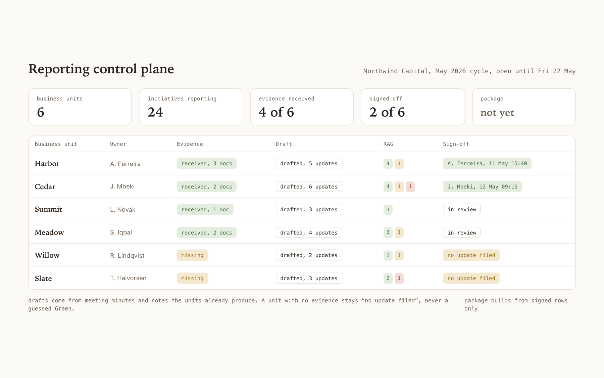
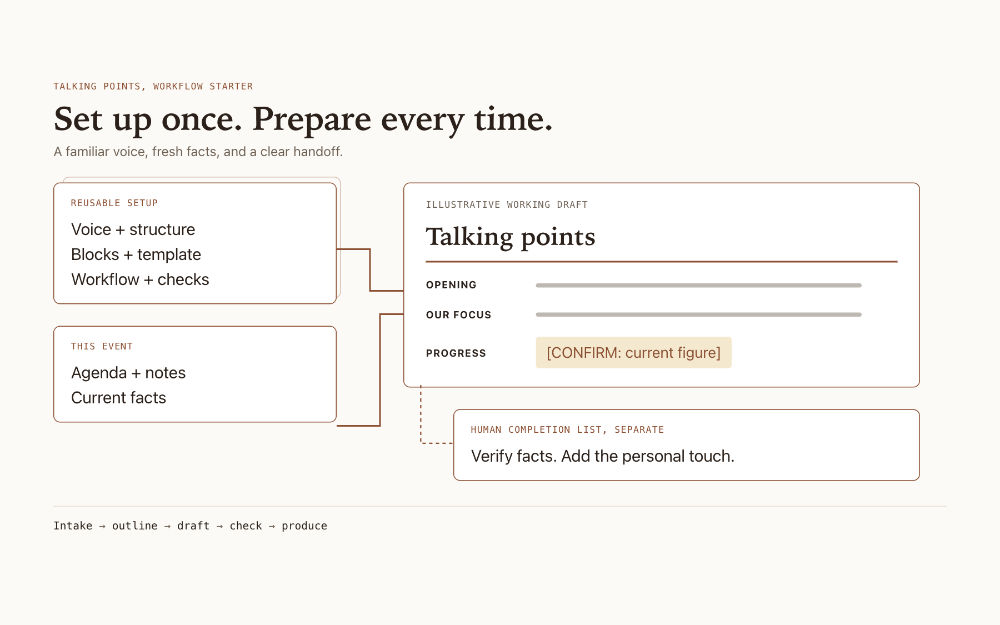
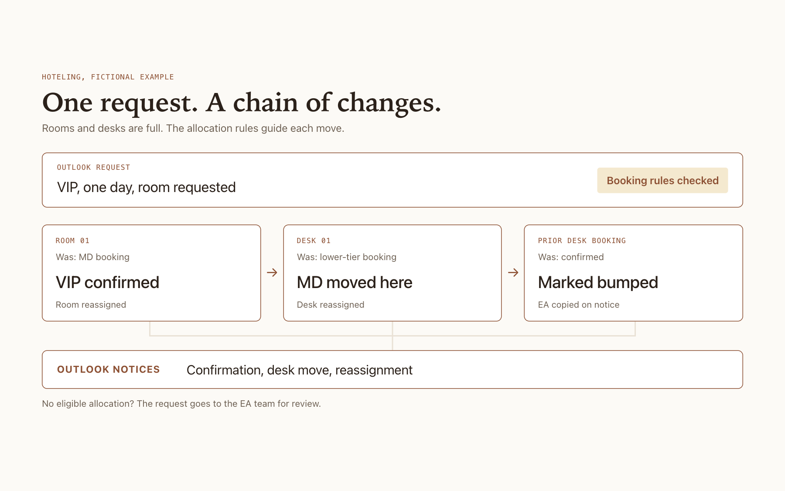
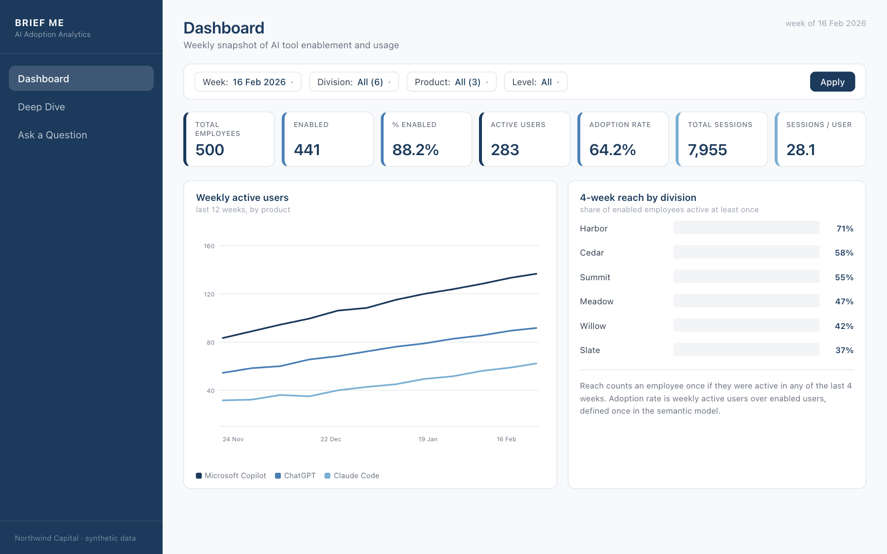
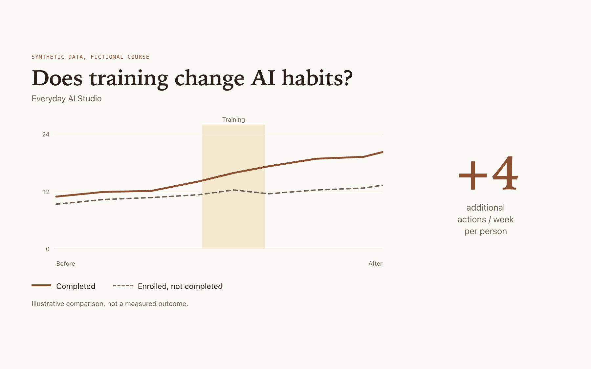
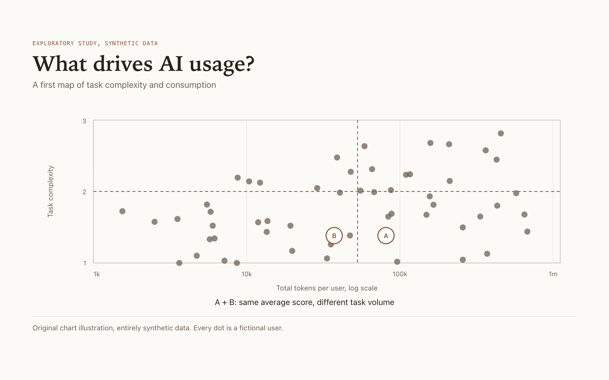
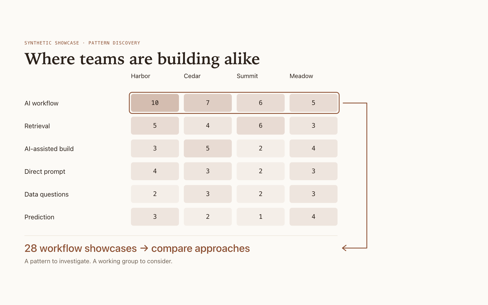
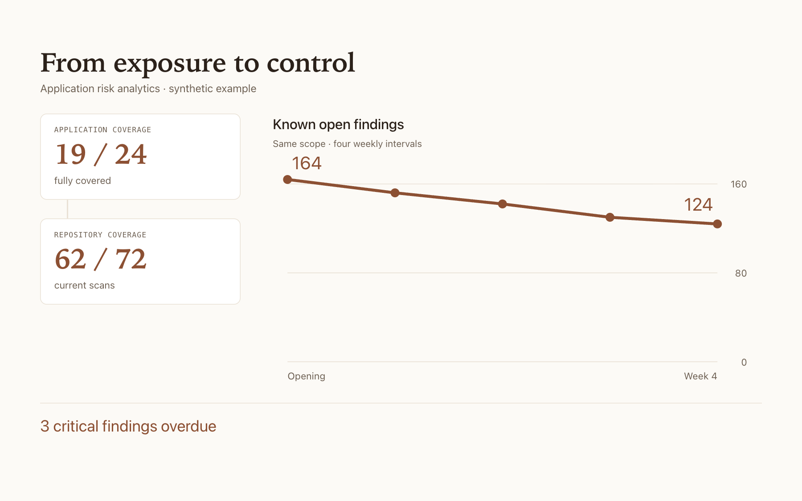
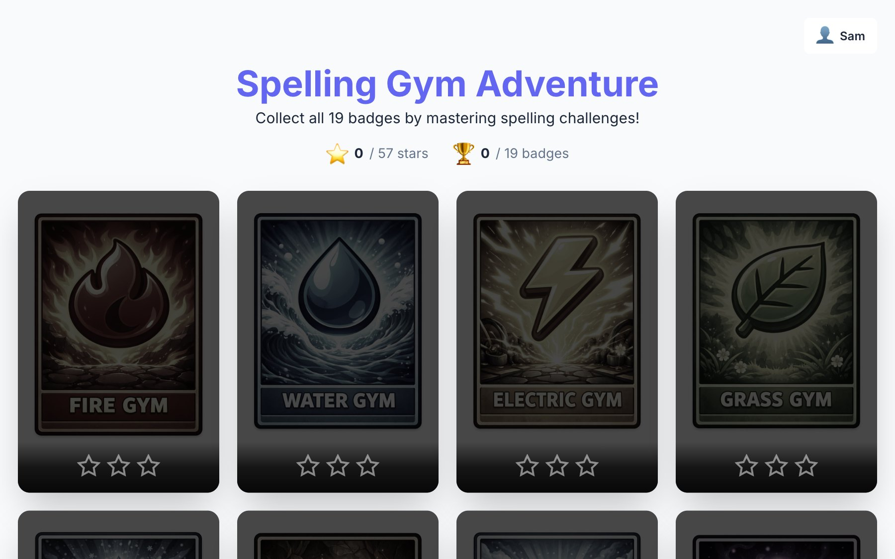

Katie Zhang
AI lets me build more of what I’m curious about.
Explore what I’m making, how I think, and what I’m learning along the way.

AI workflow
-
Pre-meeting brief
1 to 2 weeks became 1 to 2 hours. Exec communication judgment, turned into a repeatable process for meeting-ready briefs.
Data-Barista/chief-of-staff-os ↗

-
Virtual PMO
The reporting factory became an agent in Teams. It collects the updates, keeps the context, and produces the package. People review and sign.
Data-Barista/agentic-pmo-playbook ↗

-
Talking points drafter
A general AI tool, set up once for the team. Past talking points reverse engineered into written rules, so every draft comes out in the same voice and format, from reusable blocks.
Data-Barista/chief-of-staff-os ↗

-
Hoteling automation
One email starts the booking, reassignment, and follow-up workflow.
Power Automate, AI Builder, SharePoint. Method only, no public code

GenAI data analytics
-
AI Investment Map
About 130 initiatives across 7 business units on one screen, sized by spend and colored by status, with a timeline you can scrub.
ai-investment-map-mu.vercel.app ↗
-
Brief Me
An AI adoption dashboard on 500 synthetic employees. Ask in plain English and a Snowflake Cortex agent writes the SQL.
Data-Barista/brief-me ↗

-
AI training impact
Does training change AI habits? Research project using Python pipeline to test the hypothesis.
Python pipeline. Adoption research

-
Tokenomics
Who is paying frontier prices for simple work? A complexity-versus-spend read on every user.
Python pipeline. AI economics

-
AI pattern discovery
A raw export of technology showcase submissions, cleaned and classified, to find where teams are building alike and where a working group could help.
Classification framework, Python. Demand analysis

-
Application risk analytics
Do we understand our exposure, are we reducing the right risks fast enough, and when will we be under control? A pipeline built with an AI coding agent, shaped in Python, presented in Power BI.
AI coding agent, Python, Power BI

Personal work
-
Spelling Bee
Voice in, voice out: the app reads the word, the kid spells it aloud, and every letter is checked.
Data-Barista/spelling-bee ↗

How I build
Think & investigate
Codex, Claude Code, agent skills, source-backed research
Build & connect
React, Next.js, TypeScript, Python, FastAPI
Measure & automate
Snowflake, SQL, Cortex, Copilot Studio, Dataverse, Power Automate
Find me on LinkedIn.